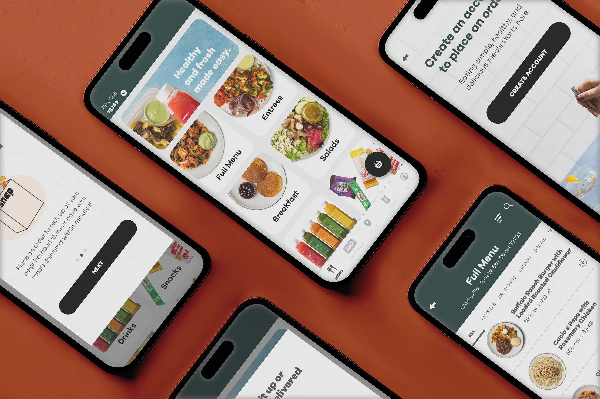
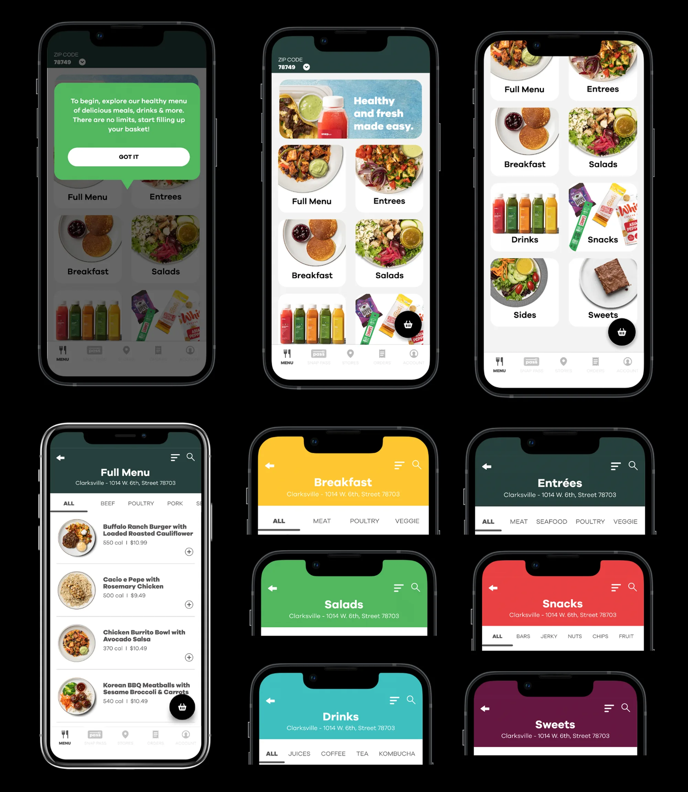

Snap Kitchen: Making Food Delivery Simple, Efficient, and Scalable
Redesigning key user journeys and operational workflows to simplify ordering, increase activation, and support scalable growth.

Overview
Snap Kitchen is a U.S. meal delivery service that provides healthy, ready-to-eat meals through a direct-to-consumer e-commerce platform, enabling customers to discover, customize, and receive meals nationwide.
This project combined product and service design to support Snap Kitchen's transition from retail to nationwide delivery. By redesigning end-to-end customer journeys and aligning the underlying service ecosystem, the experience became more consistent, scalable, and operationally efficient.
Impact
Improved Operational Efficiency
Defined an optimized workflow for meal and receipt registration, reducing manual work and improving operational efficiency.
Loyalty Program Launch
Designed onboarding flows that introduced first-time users to the Snap Pass loyalty program, laying the foundation for long-term customer retention.
Unified Digital Experience
Implemented Single Sign-On (SSO) across web and mobile platforms, enabling seamless access with a single set of credentials.
Design Challenge
How might we redesign the end-to-end meal ordering experience to support nationwide growth while simplifying operational complexity?
Key Challenges
01
Fragmented Digital Infrastructure
The platform relied on more than 30 third-party tools with overlapping capabilities and disconnected data. This fragmented ecosystem created duplicate work, inconsistent experiences, and operational complexity that limited the business's ability to scale.
02
Usability & Activation Gaps
Customers navigated separate login systems, a confusing subscription flow, and unclear value communication. These friction points generated over 120 support tickets per week, slowed user activation, and increased onboarding drop-off.
03
Operational Inefficiencies
Legacy systems, disconnected tools, and manual processes created operational bottlenecks and reduced team efficiency. With critical knowledge concentrated within a few individuals, the business struggled to scale its operations in support of nationwide growth.
Discovery
To align the solution with business goals and operational realities, I conducted discovery sessions with stakeholders across the organization, including leadership, product, engineering, customer support, dietitians, and marketing. This cross-functional research uncovered business constraints, operational dependencies, and customer pain points that shaped the product strategy.
| Area | Activities |
|---|---|
| Stakeholder Interviews | Discovery sessions with executives and cross-functional teams, including product, engineering, customer support, dietitians, and marketing, to understand business goals, operational workflows, and user needs. |
| Heuristic Evaluation | Evaluation of the web and mobile experiences using Nielsen Norman Group's 10 usability heuristics, supported by an analysis of support tickets and navigation friction. |
| User Behavior Analysis | Analysis of customer support trends, login and subscription journeys, and behavioral analytics to identify recurring friction points and drop-off patterns. |
| Competitive Analysis | Benchmarking leading meal delivery services to evaluate onboarding flows, personalization strategies, subscription models, and loyalty experiences. |

Primary Users

The Active Fitness Enthusiast
Fitness Customer
A health-conscious customer who prioritizes performance, recovery, and nutrition. They look for meals with balanced macros, larger portions, and science-backed nutrition to support an active lifestyle.
Challenges
- Meal prep takes too much time
- Difficult to consistently hit nutrition goals
- Limited healthy ready-to-eat options
- Wants meals with higher protein and balanced macros

The Busy Health-Conscious Professional
Lifestyle Customer
A busy professional balancing work and personal life who values convenience without sacrificing nutrition. They want chef-prepared meals that fit their schedule and support long-term healthy habits.
Challenges
- Little time to cook during the week
- Healthy options often lack variety
- Wants meals that taste as good as they are healthy
- Looking for a simple, reliable weekly routine

The Holistic Wellness Seeker
Holistic Customer
A customer who views food as part of overall well-being. They care about ingredient quality, nutrition, flavor, and how meals contribute to both physical and mental wellness.
Challenges
- Hard to find meals aligned with wellness values
- Wants premium ingredients and global flavors
- Looks for products that feel nourishing rather than purely functional
- Expects food to support a healthy lifestyle beyond calorie counting
Insights
Following stakeholder interviews and contextual inquiries, I analyzed the research findings through affinity mapping to identify recurring patterns. This synthesis revealed the most critical product and operational challenges, which became the foundation for the redesign.
-
Support teams were overloaded by fragmented knowledge
Customer care agents handled an average of 120 support tickets per week, spending significant time searching for information across disconnected tools and fragmented documentation. A small team managed multiple support channels simultaneously, creating operational overload and slowing response times.
Opportunity: Centralize documentation and streamline internal workflows to reduce manual effort and improve support efficiency. -
Separate login systems created confusion and friction
Customers were required to create separate accounts for the website and mobile app, leading to confusion, access issues, and frequent support requests. Many users questioned why two accounts were necessary.
Opportunity: Unify authentication across web and mobile to simplify account management and create a seamless cross-platform experience. -
The subscription journey lacked clarity
The subscription experience did not clearly explain how the service worked, leading many users to contact support before completing onboarding. Unclear guidance increased friction and slowed user activation.
Opportunity: Redesign the subscription journey with clearer information architecture and guided onboarding to reduce support dependency and improve activation. -
Internal admin tools limited operational efficiency
The admin platform required extensive system knowledge and lacked proper documentation, concentrating operational expertise within a few team members. Manual promotion workflows and disconnected website and mobile data created duplicate work and reduced operational agility.
Opportunity: Improve admin usability, standardize workflows, and synchronize operational data to reduce manual processes and support scalable operations. -
A fragmented vendor ecosystem increased operational complexity
The platform relied on more than 30 third-party vendors, many with overlapping capabilities. Disconnected systems required manual synchronization of menu, order, and customer data, while limited integration with kitchen operations increased the risk of inconsistencies and lost orders.
Opportunity: Consolidate integrations and reduce dependency on third-party systems through a more unified and connected platform architecture.
Strategy
Discovery revealed interconnected problems spanning user experience, operational workflows, and platform infrastructure. By aligning insights with business priorities, we defined five strategic initiatives to improve usability, activation, and long-term scalability.
| Solution | Opportunity | Journey Stage |
|---|---|---|
| Unified Login | Eliminate separate web and mobile accounts to reduce friction and simplify cross-platform access. | ACQUISITION |
| Onboarding Redesign | Introduce the Snap Pass loyalty program and guide first-time users through a clearer, more engaging setup flow. | ONBOARDING |
| Menu Personalization | Surface location-based, dietary-matched meals to increase relevance and drive higher meal selection engagement. | ACTIVATION |
| Subscription Flow Clarity | Redesign plan selection with visual guidance and a clear information architecture to reduce support volume. | ADOPTION |
| Admin Tool Improvements | Improve usability, document workflows, and reduce the manual overhead required for day-to-day operations. | EFFICIENCY |
Success Criteria
KPIs established to measure success
Simplified Experience
Reduce friction across the user journey — from login and onboarding to subscription management.
KPIs
Operational Scale
Reduce manual work and internal tool dependencies so teams can operate faster and with less overhead.
KPIs
Business Scalability
Support nationwide expansion, loyalty program adoption, and a personalized meal experience at scale.
KPIs

